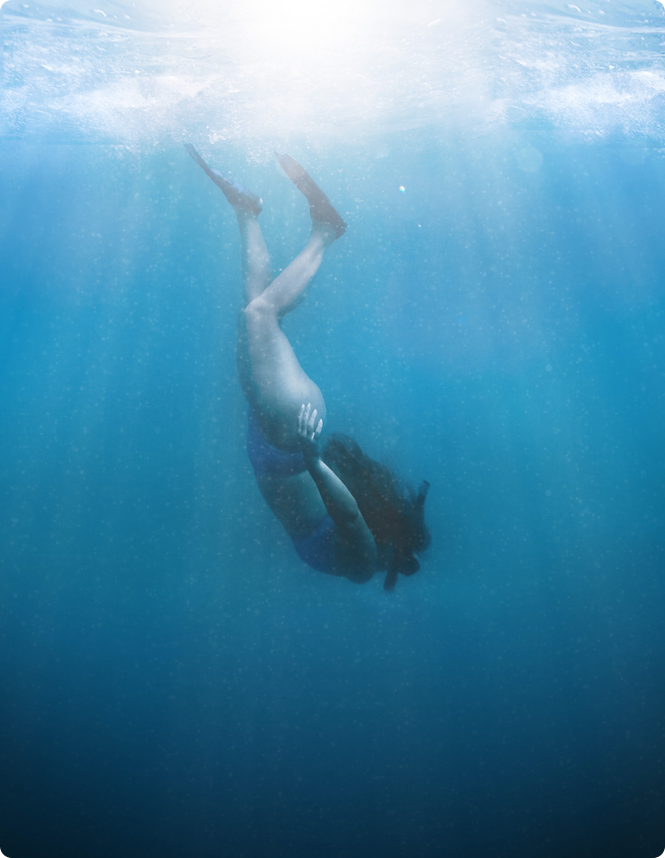

Sri Lanka is world-famous for surfing and has breaks suitable for all
levels, so you'll be in seventh heaven whether you're a hardcore surfer or you've not yet mastered standing
on a board. The country is a year-round destination because of the seasonal patterns that mean when one
coast is choppy, the other is calm.
...
Koggala Beach
Intermediate and beginner surfers have plenty of space to practise their moves at this south Sri Lankan
spot, famous for its fishermen on stilts. The best conditions are in the winter, but continuous breaks are
not guaranteed at Koggala itself. The nearby Weligama Beach break is also best suited to those just
starting out; sheltered from oncoming winds, the waves are manageable but can reach up to 1.5m (5ft).
Midigama’s waves generate long rides. Ahangama, 20 minutes away, is where the advanced surfers head,
especially in the peak season (January to February), when the waves can reach 2.5m (8ft).
Ahangama Beach
The surfing capital of the Southern Province attracts some serious surfers. With easy access to the waves
of Weligama, Unawatuna, Mirissa and Midigama, you’ll find numerous surf camps in this small town, where
the shallow reef also attracts keen snorkellers. Surf straight from the long stretch of beach here, and
relax under the jungle palms afterwards. The dry season runs from December to March, bringing with it
offshore winds and good waves. You’ll still find rideable waves during the wet season, from May to
September.
Dewata
Dewata, south of Galle, has turned into a surfing hotspot over the past five or so years. While not the
most scenic of local beaches, with small but reliable waves it attracts those looking to perfect their
technique on year-round easy surf. Right on the beach, the Shack, with its oil-drum beach bar and rooms,
is the hangout of choice, offering lessons and board rentals. The sand reef and regular (if small- to
medium-size) waves make it one of the best spots to learn in Sri Lanka, while also providing plenty of fun
for the adept.
Arugam Bay Beach
Arugam Bay is on the east coast, and the best season to be here is when it’s too rainy in the south. The
weather gods grace Arugam Bay with dry skies while the rest of the island is battered by monsoon rains.
It’s best to visit between April and September. Here Baby Point is better for beginners, while Main Point
is for more advanced riders. Elephant Rock, a tuk-tuk ride from Arugam Bay, is great for beginners, but
don’t wear flip-flops, as you have to climb rocks to get to it. It’s worth it because the beach is so
beautiful. If you’re an experienced surfer, make your way to Pottuvil and Whisky Point, north of Arugam
Bay. Whisky Point tends to get crowded, so don’t rock up too late in the day.
Weligama
Weligama has good waves all year round and is another favourite for beginners and intermediate surfers.
The main beach has a row of surfing schools with plenty of boards for rent, but it does sometimes suffer
from pollution. The waves are usually easy to learn on and can get a bit bigger for intermediate level
surfers. When you’re feeling steady, try Midigama, with three great points. The Lazy Left is better in the
afternoons and a favourite with goofy riders. The Right has a shallow reef break, while Rams Right is for
more advanced surfers, with some barrels and short and tight breaks. We also love Gurubebila. Plantation
Point is great for early morning rides with both lefts and rights. It’s a rocky entry but is easier to
ride than Coconut, which is a classic A-Frame formation better tackled by experienced surfers.
Hikkaduwa
On the southwest coast of the island, about 120km (75m) south of Colombo and just 20km (12mi) from Galle,
is the famous party town of Hikkaduwa. Once just a surfing village, it’s now popular with surfers and
partygoers alike – there is always something happening here. As for the best surf spots, try Bennys, a
left-hander reef break preferred by experienced surfers. Or there’s Main Reef, with left- and
right-handers over a deeper reef, which is good and relatively safe for all levels. We can also recommend
North Jetty and, for beginners, Beach Break, with its safe shore and reef break.
Locations

BRAND NAME
Diving
The waters that surround the beautiful isle of Sri Lanka
are full of incredible sights and wonders just waiting to be explored. We've compiled a list of the best
sites and the best time of year to visit them.
...
NOVEMBER TO MAY
Kalpitiya
The Bar Reef, located 2 km off the coast of Kalpitiya, is Sri Lanka's largest coral reef and largest
protected marine area. The clear water, tremendous variety of tropical fish, and a depth up to 3 meters
makes it the best location for snorkelling in Kaplitiya. It's also a great site for beginners to learn how
to dive, as a variety of shallow dives are possible. The reef is home to over 150 species of coral and
over
280 species of fish.
At a depth of 15 meters, the dense fish life and beautiful corals make Bulldog Reef a great place for
macro
lovers and underwater photography. Some of the species that can be found here include, crocodile fish,
moray
eels and panther turbots.
The Kalpitiya Ridge spans about 2 km in length and offers dives at a depth of up to 30 meters. In addition
to exploring underwater caves, divers can also see rock cod, large grouper, humphead wrasse and plenty of
tropical fish here.
Other good dive sites in Kalpitiya include Davey's Reef, Trevally Pass and Moray Ridge. The underwater
currents in Kalpitiya are generally not strong, but they are affected by the changes in tides - two high
water and two low water. The wind is minimal and water temperatures rarely drop below 23.5 degrees
Celsius.
It is advisable to wear a wet suit to protect against bruising from corals.
Hikkaduwa
The famous beachside tourist town of Hikkaduwa is considered to be one of the best places for snorkelling
and scuba diving in the southern coast. It has fully licensed diving centres and PADI instructors, and is
suitable for both beginners and advanced divers. The coral reefs around Hikkaduwa are among the most
diverse
and accessible in the country and are ideal for first-time snorkellers. About 60 species of hard coral and
170 species of reef fish have been recorded here. Some of the colourful reef fish that can be seen here
are
angel fish, butterfly fish, parrot fish and snappers.
Scuba divers can venture forth into the deeper reefs and rock formations that are abundant with marine
life.
Kiralagala, Godagala and Black Coral Point are some of the popular sites for underwater exploration and
stunning photography.
Hikkaduwa is also a great location for shipwreck diving. The SS Conch lying off the coast of Akkurala is
an
oil tanker which sank in 1903. Apart from the wreck, the site is full of marine life and corals. The
diving
depth here is 14.22 meters, and divers can swim into the shipwreck. The four masted iron sail ship, Earl
of
Shaftesbury, sank off the coast of Hikkaduwa in 1893. Today, the wreck of the ship lies scattered over the
sandy terrain at a depth of 15 meters. It is generally inhabited by large stingrays, groupers, snappers,
lionfish, as well as porcupine fish.
Unawatuna
Unawatuna is famous for its sandy beaches as well as for snorkelling and diving. The coral reefs of
Unawatuna Bay are teeming with colourful marine flora and fauna, just waiting to be explored. The waters
of
Unawatuna are perfect for snorkelling, because of its many shallow spots. Another must-visit site is
Jungle
Beach, a beautiful beach and a great spot for snorkelling. You will see schools of colourful fish, crabs,
moray eels, trigger fish, parrot fish and barracudas here.
The coast of Unawatuna has many fascinating shipwrecks that are great for scuba diving. The SS Rangoon is
located directly in front of the Galle Fort. It is a British steamer which is believed to have sunk well
over 100 years ago, and now lies on a sandy plain. Interestingly, the Rangoon rests in an upright sailing
position, making it a rather interesting site to explore. The wreck is full of marine life including blue
striped snappers, rabbitfish, red soldierfish and blue fin trevally. Depth is 25-30 meters.
Weligama
In addition to its attractive sandy bay, Weligama is an ideal base for snorkelling and diving in the
south.
The coral reef here extends a remarkable 700 meters. Besides the colourful corals, you may also see many
species of fish as well as sea anemones. The site is not very deep, and the seabed is a rather flat area,
ensuring good visibility. The Yala Rock is a multi-level rocky area in Weligama. Apart from the massive
rocks, there are also some caves that contain a variety of fish. The dive here generally starts at 15
meters. The Prince Heinrich Patch is an underwater hill which is great for seeing big rays, parrotfish and
giant morays. Maximum depth of this dive is 22 meters.
Colombo
Colombo has a large number of wrecks ranging from World War I era armed merchant ships to a brand-new ship
that sank in 2009. Apart from wreck diving, Colombo also has some great reefs to explore.
Gorgonian Gardens is a seabed filled with majestic Gorgonian fans. At a depth of just over 35 meters, the
site is a flat seabed covered in varying sizes of fans. Amidst these fans are large numbers of red tooth
triggerfish. This site is appropriate for experienced divers.
The Barracuda Reef, located just outside of Colombo in Mount Lavinia, is a long reef that is full of
marine
life. You will be able to see snappers, fusiliers, rabbitfish and barracudas here, in addition to a wide
variety of macro life. The site is between 20-23 meters in depth.
The SS Worcestershire, an armed British merchant ship, sank in 1917 during the height of the First World
War. Its wreck is located about 12 km west of Mount Lavinia at
a depth of 57 meters. Although the shipwreck is largely broken up inside, it maintains its shape on the
outside. The wreck is packed with marine life, including yellow fin trevally, grey snappers, giant
trevally
and groupers. This dive is suitable for advanced divers.
What is known as the Taprobane North Wreck is actually the British steam ship SS Perseus, which sank in
1917
after striking a German sea mine. Located 20 km off the coast of Colombo, the vessel lies at a depth
between
30-40 meters. It is covered in soft corals as well as black corals, and is home to fish such as snappers,
napoleon fish, trevally and grouper. This dive too is suitable for advanced divers.
MAY TO OCTOBER
Trincomalee
Located on the Northeast coast of Sri Lanka, Trincomalee is a popular tourist destination thanks to its
stunning beaches. Trincomalee has many wrecks as well as reefs that make it a sought after diving
destination.
Pigeon Island, a few hundred meters offshore from Nilaveli Beach is a great spot for snorkelling. Diving
is
also possible a little further offshore, where the coral reefs have a great display of underwater life.
The HMS Diomede was a 44-gun fifth rate built during the American Revolutionary Wars. She was deployed in
a
squadron to Ceylon to take Trincomalee from the Dutch. However, coming into the bay, she struck a sunken
rock and sank off the coast of Trincomalee in August 1795. The dive site is silty and visibility is not
great. Objects found at the site are large cannons and anchors. The site is at a depth of 42 meters.
There are also a number of Japanese and British aircraft fell into the Trincomalee harbour after a fierce
air battle that took place in 1942. Some of the aircraft wrecks can be explored by divers.
Batticaloa
The famous wreck of the HMS Hermes off the east coast at a depth a little over 50 meters. The Hermes was
the
world's first ship to be designed as an aircraft carrier, and it was sunk by Japanese bombers during the
Second World War. It is considered to be an underwater museum of World War II artefacts. It is also home
to
many underwater species such as tuna, grouper, rays, barracudas, snapper and macro critters. The ship sank
with over 300 of its crew on board, and local divers claim that remains of some crew members can be seen
upon shining a light through the portholes of the wreck. The wreck lies at a depth between 44-55 meters.
The Brennus Shoal Wrecks in Batticaloa offer divers two closely located wrecks to explore. The SS Brennus
sank in 1881, and the SS John Jackson sank in 1908. According to the Maritime Archaeology Unit, the SS
John
Jackson is the largest steam shipwreck in the waters of Sri Lanka.
Great and Little Basses Reefs - Kirinda
The Great and Little Basses Reefs are located in the Southeast coast of Sri Lanka and are considered to be
one of the best dive sites in the country. However, the conditions for diving here are only good for a
short
period from March to April. Furthermore, as the currents can get very strong, it is recommended that only
well-experienced divers attempt this dive.
The Great Basses and Little Basses Reefs are famous for colourful corals, interesting marine life and
intriguing shipwrecks. Some of the marine life that can be viewed here are tuna, angelfish, spadefish,
grouper, porpoise, grey sharks, Maori wrasses, snappers and rays.
The Great Basses reef is also significant for holding the wreck of an 18th century ship belonging to
India's
Moghul empire. The wreck was discovered in 1961, by Sir Arthur C. Clarke and Mike Wilson. Some of the most
intriguing finds from the wreck were fused bags of silver Surat rupees, cannons and cannon balls. The
40-gun
frigate, HMS Daedalus, sank in 1813, and its wreck can be explored in Little Basses Reef.
Locations
BRAND NAME
Whale Watching
Rated one of the best places in the world to see the
majestic Blue Whale, have a read to see your best options to go whale watching in Sri Lanka
Sri Lanka is an enchanting little island which boasts of a number of prominent attractions. A tour in this
magical country will give you plenty of opportunities to discover bliss. The island nurtures many beautiful
species of flora and fauna. The glistening blue waters of the Indian Ocean which surrounds the island of Sri
Lanka also has many incredible beings.
Whale watching tours in the paradise island are arranged to give people the chance to witness the incredible
beauty of whales and dolphins. These tours can be arranged throughout the year in different parts of the
country so you will always be able to indulge in this experience.
The article below provides some information about whale and dolphin watching tours in the country.
...
Where can you see whales in Sri Lanka?
Best Places in Sri Lanka for Whale Watching Tour
Whale watching tours are popular among visitors to Mirissa and Trincomalee. Mirissa is a beautiful little
coastal town which boasts of incredible beaches. It is located in the southern coast, between the famed
cities of Galle and Matara. You can reach the town of Mirissa in 40 minutes from Galle. From the commercial
capital of Colombo, one can reach the town in 4 hours. There are plenty of great hotels in Mirissa so it
will be easy for you to enjoy an early morning tour while indulging in supreme comforts.
Trincomalee is also one of the cities which offer the thrills of whale watching tours. It is a major port
city in the northeast coast of Sri Lanka. You can reach this city in two hours from the famous village of
Sigiriya in the Cultural Triangle. It takes about 5 hours to reach this city from Colombo. Here too one will
find a myriad of hotels and resorts which offer comfortable accommodation for various budgets.
There are lots of great tour operators in both these areas offering delightful whale and dolphin watching
expeditions.
When can you see whales in Sri Lanka?
The Best Time You can See Whales in Mirissa & Trincomalee
As it was mentioned earlier, whale watching tours can be arranged in Sri Lanka throughout the year. The best
time to enjoy a whale watching tour in Mirissa is between the months of November and April. The best time to
embark on whale watching tours in Trincomalee is between the months of May and September. December, January
and April are the best months to enjoy a whale watching expedition in the country.
When is the Whale Watching seasons in Trincomalee?
What Type Whales I Can See?
Type of Whales in Sri Lanka
Whales are warm blooded marine mammals of giant size. They are found in all the oceans of the world. 80
species of whales exist in the world. 26 species of whales have been recorded in the waters that surround
the little island of Sri Lanka. Some of the species that you will get a chance to spot during whale watching
tours are, blue whale, humpback whale, fin whale, killer whale, minke whale, sperm whale, pygmy sperm whale,
dwarf sperm whale, short-finned pilot whale, false killer whale, southern bottlenose whale, Bryde’s whale,
melon headed whale and Cuvier’s beaked whale